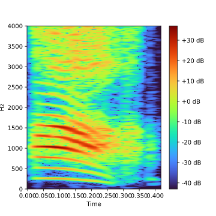

The effects of harmonicity in Mandarin tone perception Audio Demo
Yiran Ding
Main Reference
McPherson, M. J., & McDermott, J. H. (2018). Diversity in pitch perception revealed by task dependence. Nature human behaviour, 2(1), 52-66.
Popham, S., Boebinger, D., Ellis, D. P., Kawahara, H., & McDermott, J. H. (2018). Inharmonic speech reveals the role of harmonicity in the cocktail party problem. Nature communications, 9(1), 1-13.
F0, pitch and harmoinic
Fundamental Frequency (F0)
The Fundamental Frequency of a speech signal, often denoted by F0, refer to the approximate frequency of the (quasi-)periodic structure of voiced speech signals.
it is typically not stationary, but changes constantly within a word or sentence, so it can be used for expressive purposes to signify, like emphasis, question, and lexical tone in tonal languages
Pitch
As F0 describes the actual physical phenomenon, whereas pitch describes how ears and brains interpret the signal, in terms of periodicity.
For example, a voiced signal could have an F0 of 100hz, if a high-pass filter applies to remove all singal component below 450hz (which would remove the actual F0). The lowest remaining periodic compeonet would be 500hz (equal to fifth harmonic of original F0)
but a human listener would then typically still preceive a pitch of 100hz even it doesn't exist.This well-known phenomenon is however still not completely understood.
Harmonic and Harmonicity
A typical attribute of vocal sound is harmonic structure, depends on the waveform produced by the vibrating vocal cords. Like the musical instrument, the human voice is not a pure tone, rather, it is composed of a fundamental tone(frequency) and a series of higher frequencies called upper harmonics. Usually corresponding to a simple mathematical ratio of harmonics. and the peak in harmonics often reflect the Formants of a vowel.
Harmonicity play a important role in speech perception, as long as the harmonics are precise multiples of the F0, the voice will sound clear and pleasant. If the voice contains partial of (non-)un-harmonicity, like the old piano, it might increase degree of roughness, harshness,or hoarseness.
Harmoincs also plays a crucial role in terms of pitch perception, another important feature of harmonic is the resolvability. as show below.
The frequency resolution of the peripheral auditory system can be represented by auditory filters that increase in bandwidth with increasing frequency (in gray). The low-numbered harmonics (1-6, in blue) of a tone with a fundamental frequency F0 are processed within distinct filters and are said to be 'resolved'. Neighboring high-numbered harmonics (above the 12th, in red) interact within the same filter and are said to be 'unresolved'.
There are several possible central mechansim that can be used to extract cues to decode the pitch of harmoinc sound.
- The simplest mechanism is the use the lowest-frequency component to extract pitch (F0).
- Secondly, audition system might store many spectral harmonic templates, a match between one of these templates and resolved harmonics determins the pitch.
- THe third potenital mechanism is to extract pitch from the interactions among unsolved harmonics within an auditory filter, which generate a temporal envelope with a periodicity equal to the pitch.
Evaluation(test-purpose)
The effect of harmonicity and relation between pitch and fundamental frequency has been long studied in general perception tasks, but the effects of harmonicity in Mandarin tone perception have remained deabated. I'd like to create a series of stimulus to study the possible computations underline during tone processing
This isn't the experiment-oriented demo, so I will embed the audio as well as the spectrogram (which will indicate the manipulation result). It will contain almost 15 audio samples and takes like 5 mins to listen, I will be much appreciated for your feedback.
- Pyworld A typical source-filter model of speech, it can analysis and manipulate of speech based on F0, Spectral Envelope and Aperodic Envelope genereate by WORLD vocoder
- Mosaic Speech a modified Noise-vocoded method to mask the desire parts of speech
- Harmonic plus stochastic model a modified version of Sinusoids model that can decompose signal into harmonics and stochastics parts for analysis and synthesis.
To date, there are three possible ways to analyze and manipulate speech then generate (relatively) audible speech,
Below are a few demo audios.

|
|
|  |